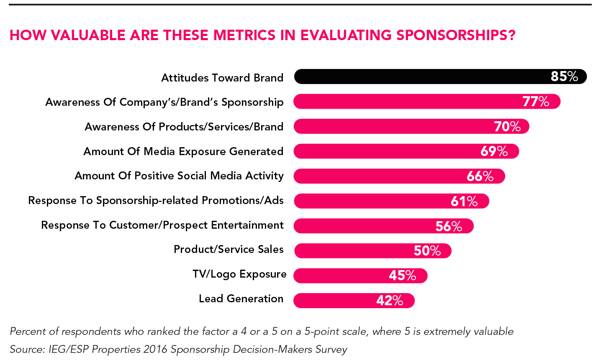

The reason why any Company sponsors your NGO is because it's an investment opportunity from which they expect a return. What can your NGO specifically deliver in exchange for the sponsorship? Some measurable returns include (Candelaria, 2011):
Event signage
Media coverage: web, print, radio and television advertising
Access to the mailing list of the specific event
Opportunities for a giveaway
Event signage
Signage is a widely used tool that companies use to advertise the company and their product. It can be defined as:
"Any publicly displayed information that's presented in the form of words, symbols and/or pictures and is designed to advertise your business (Entrepreneur). "
A typical example of event signage is signs of sponsors at a sporting event. These events place signs around the area so everyone attending the event can see them. An NGO might host a 5K run/walk where signs of sponsors would be placed along the running route. The cluster of companies who have made the largest financial contribution would have their signs placed at the start and finish line since these spots are the most photographed and most likely to be included in the local newspaper.
Media Coverage
There are several forms of media coverage. The easiest one to acquire is Internet advertising. Social media platforms like Twitter, Facebook and Instagram all have functions and memberships options for company advertising. Another way is to use your NGO's website to show their logo, post blog posts or short articles where your NGO thank sponsors. When proposing this kind of advertisement, make sure to include how many times your website is viewed per hour, day, week or year and other relevant information (Candelaria, 2011). Rely on sources like Alexa or Google Analytics for this information.
Other Sponsorship Articles
What is a Corporate Sponsorship?
Why Companies Want to Sponsor Your NGO
Approaching a Prospective Sponsor
The Sponsor Proposal

A lower cost option of traditional media coverage is print advertising. This includes newspapers, magazines and local newsletters. It's very common for local communities and homeowner's associations to circulate a newsletter that lists upcoming area events. Not only is it a great way to get your local NGO's event publicized, by writing an article covering the event, it's also one of the easier sources to acquire media coverage. These types of sources are often glad to support community events.
The next level is the major newspapers. Despite this being a harder, more competitive outlet, this opportunity shouldn't be overlooked. Going a step further is radio advertising. Many radio stations have a community announcement line on their websites from which they pick organizations from the community to announce on the air.
An alternative option to radio is podcast advertising. There are a lot of private individuals who host their own podcast. Some of them have hundreds of thousands of subscribers on their chancel. Although a commercial spot on a podcast aren't free the chances are that they are a significantly cheaper than a mainstream radio station. There are podcasts that are very political, so if your NGO can find a podcast that supports the same area of interest as yours, there is a good chance of getting advertising at a very low cost or even for free.
If your NGO have the resources and a good concept you can launch your own podcast chancel. Building a substantial base of followers is a major advertising assets for potential sponsors. Just like podcasts there are a lot of private individuals who have their own Youtube chancel. Again, these can have hundreds of thousand subscribers and can be as attractive to potential sponsors as podcasts.
Press releases are another way to get attention from local news stations. Often, news programs will do community recognition segments as a means of highlighting local heroes. An option is for your NGO to could submit one of your organization’s volunteers for this segment. Personal stories that showcase humanity are extremely newsworthy. If your NGO has helped someone in a significant way and that person is willing to share their story with the local news, that would be a great advertisement scoop.
Having a well-known keynote speaker, such as a famous athlete or other celebrity is an effective way to attract television coverage. This kind of advertising yields the greats return but it's also the hardest to secure.
Access to Mailing Lists
There are several forms of media coverage. The easiest one to acquire, is Internet advertising. Social media platforms like Twitter, Facebook and Instagram all have functions and membership options for company advertising. Another way is to use your NGO's website to show their logo, post blog posts or short articles where your NGO thank sponsors. When proposing this kind of advertisement, make sure to include how many times your website is viewed per hour, day, week or year and other relevant information (Candelaria, 2011). Rely on sources like Alexa or Google Analytics for this information.
Opportunities for Giveaways
Sometimes, at events, companies hand out free promotional items such as pens, pencils, key chain, and water bottles with the company's name, website, and other information as means of advertisement. If your NGO on such promotional stuff to hand out at in event it's a win-win since people love free stuff which is good for your NGO's event and it's a way that the sponsor can advertise their company to potential customers.